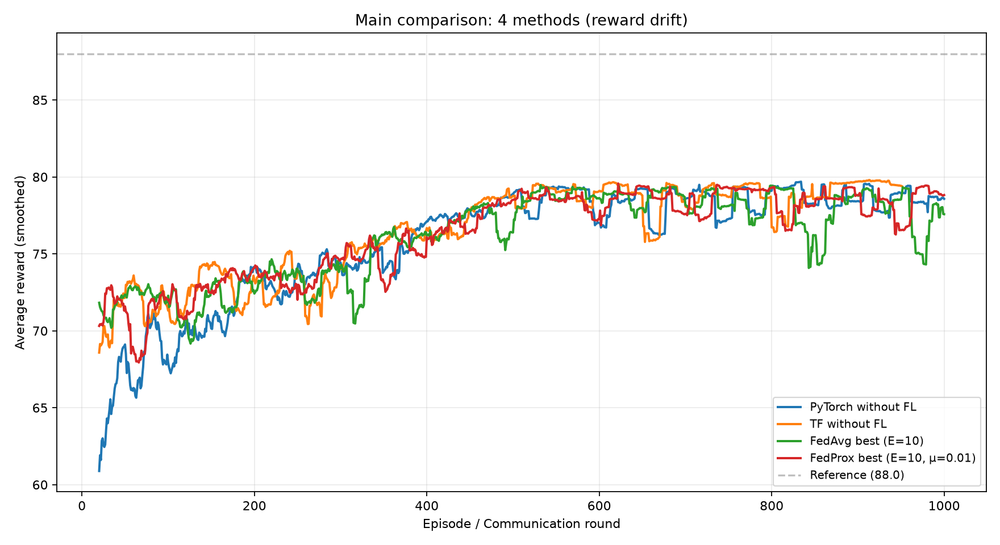
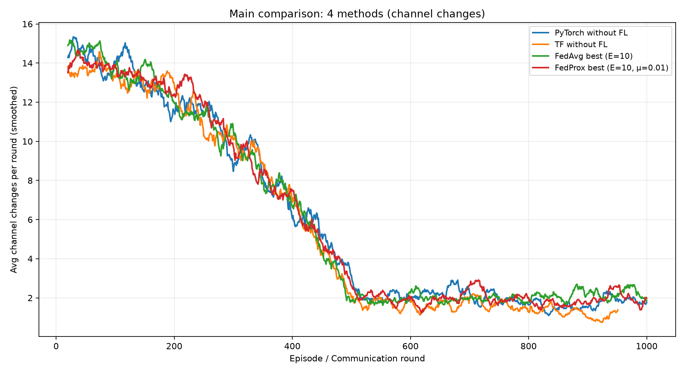
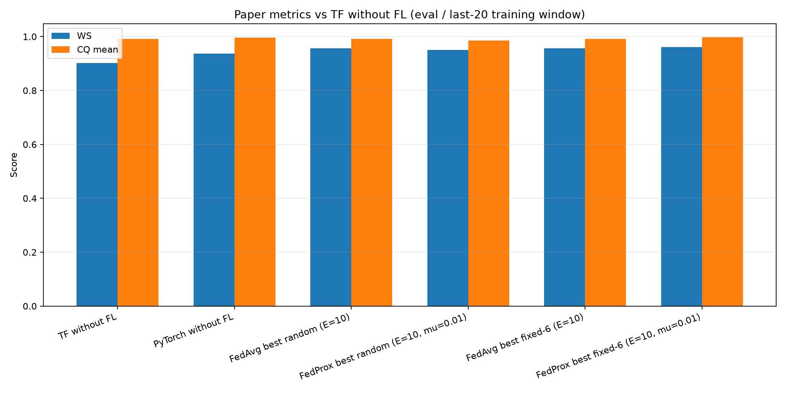
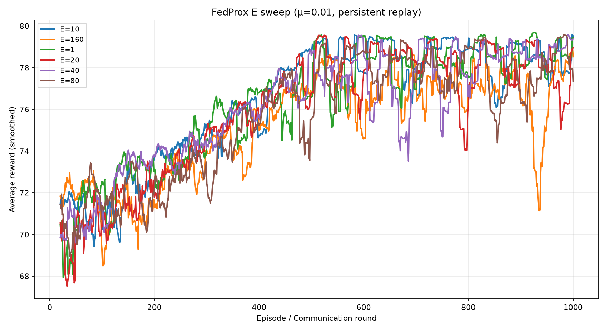
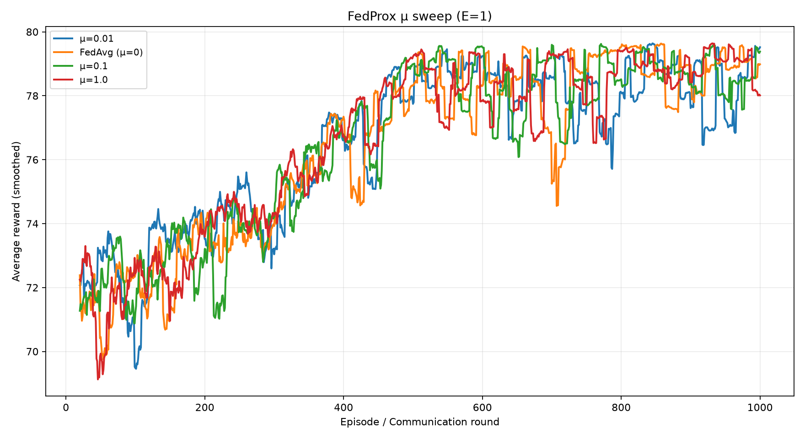
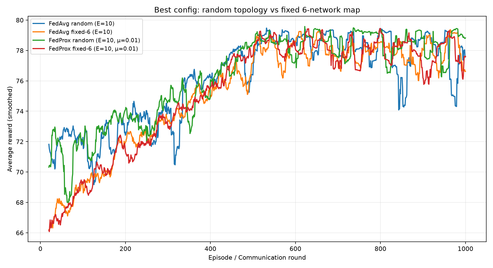

A detailed visual guide to FL algorithms, mathematics, trade-offs, and how they connect to federated reinforcement learning for wireless channel allocation (CARLTON).
PART 1
Foundations — Why Federated Learning Exists
From centralized machine learning to collaborative training without data pooling
1.1 The classical (centralized) approach
In standard machine learning, we assume a dataset D = {(xᵢ, yᵢ)} stored in one place. We minimize an empirical risk:
minw F(w) = (1/|D|) Σ(x,y)∈D ℓ(w; x, y)
Gradient descent (or Adam) updates w using batches sampled from the full dataset. This is simple and well-understood, but it requires:
Uploading all raw data to a cloud server
High storage and bandwidth at the center
Trust that sensitive data (health, location, traffic patterns) is protected
1.2 The federated setting
Data are partitioned across K clients (devices, hospitals, base stations, RL agents). Client k holds dataset Dₖ (or generates experience locally). The global objective is:
minw F(w) = Σk=1..K (nₖ/n) · Fₖ(w), where Fₖ(w) = (1/nₖ) Σ(x,y)∈Dₖ ℓ(w; x, y), n = Σ nₖ
Core idea
Clients never share Dₖ. They only share model updates (gradients or weights). The server aggregates updates to improve a global model that works well on the union of all clients' distributions.
1.3 Why FL matters for wireless & CARLTON
Privacy / regulation: Network topology, user locations, and traffic are sensitive — they should not leave each operator.
Scale: Many independent network managers (agents) can contribute learning signal without one giant replay buffer.
Bandwidth: Sending neural network weights (MB scale) is cheaper than sending full SINR traces or raw spectrum data (GB scale).
Your project: Each network manager trains on local episodes; federated_averaging() merges Q-network weights into one global policy.
PART 2
Formal Problem Setup & Communication Round
Notation used throughout this guide
Symbol
Meaning
K
Number of clients participating in a round
w
Global model parameters (weights)
wₖ
Local model at client k after local training
nₖ
Number of samples (or episodes) at client k
E
Number of local epochs per round (FedAvg)
T
Total communication rounds
ℓ(w; x, y)
Loss on one supervised example
Generic federated round (synchronous)
Client selection: Server chooses subset S ⊆ {1,…,K} (may be all clients).
Broadcast: Send current global weights wt to each selected client.
Local computation: Each client k runs LOCALTRAIN(wt, Dₖ) for E epochs → produces wₖt+1.
Upload: Clients send wₖt+1 (or gradients) to server.
Aggregation: Server computes wt+1 = AGGREGATE({wₖ}).
Communication vs computation
Each round has a wall-clock cost = (time to download w) + (local training) + (time to upload update). FedAvg reduces number of rounds by doing more local work E, but too much local work causes client drift (especially under Non-IID data).
Convergence intuition (simplified)
Under IID data and convex loss, FedAvg with enough rounds approaches the same minimum as centralized SGD. Under Non-IID data, local objectives Fₖ point in different directions — averaging their minimizers can be far from any client's optimum or the true global optimum. That is why FedProx, FedOpt, and personalization exist.
PART 3
IID vs Non-IID Data — The Central Challenge
Understanding heterogeneity is key to choosing an FL algorithm
IID (Independent & Identically Distributed)
Each client's data is drawn from the same distribution P(X,Y). Splitting a shuffled dataset across clients simulates IID. FedAvg works well.
Non-IID (Heterogeneous)
Each client sees a different distribution Pₖ(X,Y). Examples: one client has only cats, another only dogs; one cell tower sees urban interference, another rural.
Common types of Non-IID
Type
Description
Wireless / CARLTON example
Label skew
Different class proportions per client
Some networks mostly see high-SINR channels, others mostly congested
Feature skew
Same labels, different input distributions
Same channel index means different QV patterns in different geographies
Quantity skew
Very different nₖ per client
2-user vs 15-user networks; uneven episode counts
Concept drift
P changes over time
Other networks switch channels → interference landscape shifts during training
ALGORITHM 1
FedAvg — Federated Averaging
McMahan et al., 2017Most widely usedUsed in your repo
2.1 Motivation
FedAvg was designed for mobile devices that generate data locally (keyboard predictions, etc.). Instead of uploading gradients every mini-batch (expensive), each device runs multiple epochs of SGD locally, then uploads only the final weights. The server averages them proportionally to dataset size.
2.2 Algorithm (detailed)
Server initializes w⁰
for each round t = 0, 1, 2, …, T−1:
Select clients Sₜ ⊆ {1,…,K}
for each client k ∈ Sₜ in parallel:
wₖ ← wᵗ # download global model
for epoch e = 1 … E: # local training
for batch B from Dₖ:
wₖ ← wₖ − η ∇ℓ(wₖ; B) # SGD step
upload wₖ to server
wᵗ⁺¹ ← Σₖ (nₖ / Σⱼ nⱼ) · wₖ # weighted average
wt+1 = Σk∈Sₜ (nₖ / Σj∈Sₜ nⱼ) · wkt+1
2.3 Why weighted averaging?
If client A has 10,000 samples and client B has 100, A's model should influence the global average more — it is a better estimate of the global loss landscape. With uniform averaging, a tiny client can disproportionately pull the global model.
2.4 Communication cost analysis
Let |w| = number of parameters (e.g. 50,000 floats ≈ 200 KB). One FedAvg round uploads K × |w| and downloads K × |w|. With E local epochs, you trade fewer rounds for more compute per round. Rule of thumb:
Large E → less communication, more client drift risk
Small E (=1) → behaves like FedSGD, more communication, less drift
2.5 Strengths & limitations
Strengths
Extremely simple to implement
Strong baseline when data is roughly IID
Reduces communication vs per-step gradient upload
Maps directly to PyTorch state_dict() averaging
Limitations
Client drift under Non-IID — local wₖ diverge from wᵗ
Synchronous rounds blocked by slowest client (straggler)
No built-in privacy — weights can leak training data
Assumes all clients run same model architecture
2.6 Your implementation
In BuildingBlocks/TrainBlock.py, federated_averaging() stacks each tensor in the state dict and computes element-wise mean across agents. After 1000 rounds, checkpoints are saved in Train_weights_frl/.
ALGORITHM 2
FedProx — Federated Optimization with Proximal Term
Li et al., 2020Handles heterogeneity
3.1 Motivation
When clients have Non-IID data, local training in FedAvg can push wₖ far from the global wᵗ. The averaged result may perform poorly for everyone. FedProx adds a proximal penalty that keeps local solutions close to the broadcast global model.
3.2 Local objective
minw Fₖ(w) + (μ/2) · ‖w − wt‖²
μ ≥ 0 controls strength of the penalty:
μ = 0 → reduces to FedAvg local objective
μ large → local model barely moves from wᵗ (very conservative)
μ tuned → balance between fitting local data and global consistency
3.3 Intuition: rubber band model
Think of wᵗ as an anchor. Each client explores its local loss landscape but is pulled back toward the anchor. This reduces conflicting updates when gradients point in different directions (Non-IID).
3.4 When to use FedProx
Clients have clearly different data distributions (label/feature skew)
FedAvg training loss oscillates or diverges
Wireless: networks in different regions with different interference profiles
3.5 Partial participation
FedProx theory also supports clients dropping offline mid-round — only a fraction C of K clients participate. The proximal term stabilizes training when participation is sporadic (common on mobile networks).
ALGORITHM 3
FedSGD — Federated Stochastic Gradient Descent
One gradient step per client per round — closest to centralized SGD
4.1 How it differs from FedAvg
Aspect
FedSGD
FedAvg
Local work
Compute gradient on one batch (or full local set once)
Run E epochs over full Dₖ
Upload
Gradient gₖ = ∇Fₖ(wᵗ) or Δwₖ
Full weight vector wₖ after local training
Server update
wᵗ⁺¹ = wᵗ − η Σ (nₖ/n) gₖ
wᵗ⁺¹ = Σ (nₖ/n) wₖ
Communication rounds
Typically more rounds needed
Fewer rounds, heavier local compute
Client drift
Lower — no deep local training
Higher when E is large
4.2 Mathematical update
wt+1 = wt − ηg · Σk (nₖ/n) · ∇Fₖ(wt)
This is equivalent to one step of centralized SGD if you could access all data — but each client only computes its part of the gradient.
4.3 When FedSGD is preferred
You want behavior as close as possible to centralized training
Local datasets are small — little benefit from multiple epochs
Non-IID is severe and FedAvg drifts too much even with small E
Communication is cheap relative to local compute (uncommon on wireless)
Relation to your FRL project
Your agents run local_train_steps=10 per round before upload — this is closer to FedAvg-style local training than FedSGD's single-step model. Increasing local steps increases drift risk but improves sample efficiency per round.
ALGORITHM 4
FedOpt — Adaptive Federated Optimization
Reddi et al., 2021 FedAdam · FedAdagrad · FedYogi
5.1 Motivation
FedAvg treats the average of client weights as the new global model directly. But if client updates are noisy, conflicting, or of varying magnitude, a plain average may oscillate. FedOpt separates roles:
Clients: compute local updates (like FedAvg)
Server: maintains an optimizer state (momentum, adaptive learning rates) and applies it to pseudo-gradients
5.2 FedAdam server update (conceptual)
Define pseudo-gradient at round t:
Δt = wt − Σk (nₖ/n) wkt+1
Then apply Adam at the server (with moment estimates m, v):
m ← β₁m + (1−β₁)Δt v ← β₂v + (1−β₂)(Δt)² wt+1 ← wt − η · m / (√v + ε)
5.3 Why this helps
Momentum smooths noisy client contributions across rounds
Adaptive η per parameter — some weights need larger/smaller effective steps
Better convergence on Non-IID benchmarks than FedAvg in many papers
5.4 Cost
Server must store optimizer state (2× model size for Adam). Clients unchanged. Slightly more complex implementation than FedAvg.
ALGORITHM 5
Personalized Federated Learning
One global model may not fit all clients — learn shared + private components
6.1 The problem with a single global model
Under strong Non-IID, the global w that minimizes Σ (nₖ/n)Fₖ(w) may be a compromise that works mediocrely for everyone but optimally for no one. Personalization asks: can we learn a shared representation plus client-specific heads?
6.2 Common architectures
Approach
What is federated
What stays local
Fine-tuning
Global w → each client fine-tunes locally
Final personalized layers
Split learning
Base layers (feature extractor)
Classification / policy head per client
Meta-learning (e.g. Per-FedAvg)
Meta-parameters for fast adaptation
Inner-loop local adaptation
Clustered FL
Multiple cluster models
Client assigned to nearest cluster
6.3 Wireless example
In CARLTON-style channel allocation:
Shared: general Q-value patterns for "good vs bad" channels under ICI
Personal: bias toward channels that work in a specific city, user density, or neighbor topology
Your current FRL uses one global Q-network for all agents — personalization would mean federating only early ResNet layers and keeping a small per-network head local.
ALGORITHM 6
Federated Reinforcement Learning (FRL)
Extending FL to agents that learn from environment interaction, not fixed datasets
7.1 Supervised FL vs FRL
Supervised FL
Federated RL (your project)
Local data
Fixed dataset Dₖ of (x, y) pairs
Trajectories from environment interaction
Data storage
Static files
Replay buffer — grows during training
Objective
Minimize prediction loss
Maximize expected cumulative reward
Non-stationarity
Mostly static Dₖ
High — other agents change policy → environment shifts
Typical algorithm
FedAvg on SGD
FedAvg on DQN / DeepMellow updates
7.2 FRL round in your codebase
main_v3.py samples a random wireless scenario (N networks, user locations).
Global weights broadcast to all network-manager agents via global_weights.
Local buffers → merged into Global Replay Memory (10⁵ transitions)
Private buffer per agent; no central merge
Weight update
Centralized Adam on samples from GRM
FedAvg of local weights after local SGD
Episodes
B = 1000
1000 communication rounds ✓
Reward ρ
0.7 personal / 0.3 social
0.6 / 0.4 in code
Learner
DeepMellow + MellowMax + masking
Same algorithm, PyTorch port ✓
7.4 Unique FRL challenges
Non-stationarity: As federated policy improves, transition distributions change — violates classic IID assumptions for replay sampling.
Multi-agent coupling: In CARLTON, one network's channel choice changes SINR for neighbors — each agent's "environment" includes others.
Sparse rewards: Personal + social welfare reward is engineered (Algorithms 2–3 in paper), not raw SINR.
Partial observability: Each manager sees only its QV vector (POMDP), not full global state.
Your 1000-round training result (summary)
Mean reward ≈ 50 (56% of paper's perfect-game ceiling 88). Channel changes dropped from ~14 in early rounds to ~2 in late rounds — consistent with learning stability, though paper metrics (WS, min_CQ) still need full 420-game eval for fair comparison.
PART 4
Communication Topologies & Sync Models
8.1 Star topology (default)
All clients talk only to a central aggregator. Used in FedAvg, your main_v3.py. Simple, but the server is a single point of failure and a bandwidth bottleneck.
8.2 Hierarchical (edge-cloud)
Clients → edge servers (per region) → cloud. Reduces latency for local clusters. Useful when network managers are grouped geographically (e.g. per city).
8.3 Peer-to-peer / gossip
Clients exchange weights with neighbors without a central server. More robust, harder to analyze convergence. Rare in industrial FL today.
8.4 Synchronous vs asynchronous
Mode
Behavior
Pros
Cons
Synchronous
Server waits for all selected clients before aggregating
Stable, easier theory
Stragglers delay everyone
Asynchronous
Server updates whenever any client uploads
No waiting for slow clients
Stale gradients, harder convergence proofs
PART 5
Privacy, Security & Robustness (Overview)
FedAvg alone does NOT guarantee privacy
9.1 Threat model
Honest-but-curious server: Follows protocol but tries to infer private data from uploaded weights
Malicious client: Sends poisoned updates to corrupt global model (backdoor attack)
9.2 Mitigations
Technique
What it does
Differential Privacy (DP)
Add noise to gradients/weights before upload — provable privacy budget ε
Secure Aggregation
Server learns only sum of updates, not individual client contributions
Byzantine-robust aggregation
Median, trimmed mean instead of plain average — resists outlier clients
Important
"Data never leaves the device" ≠ "Privacy is guaranteed." Model updates can still leak membership or properties of training data (membership inference attacks). For production wireless deployments, DP or secure aggregation should be considered.
PART 6
Master Comparison — Which Algorithm When?
Method
Local objective
Server update
Best when
Avoid when
FedAvg
Min Fₖ(w), E epochs
Weighted avg of wₖ
IID or mild heterogeneity; baseline
Severe Non-IID, no tuning
FedProx
Fₖ(w) + (μ/2)‖w−wᵗ‖²
Weighted avg of wₖ
Strong Non-IID, partial participation
μ hard to tune; adds hyperparameter
FedSGD
One gradient step
w − η Σ gₖ
Match centralized SGD; small local data
High communication cost
FedOpt
Like FedAvg locally
Adam/Adagrad on Δ
FedAvg unstable; noisy clients
Server memory 2–3× model size
Personalized
Local head + shared base
Avg shared layers only
Per-client optima differ strongly
Need clear shared structure
FRL + FedAvg
RL loss on local replay
Avg policy weights
Multi-agent RL, wireless DCA
Non-stationary coupled envs
Decision flowchart (text)
Is data supervised and roughly IID?
YES → start with FedAvg
NO → Is heterogeneity severe?
YES → try FedProx (tune μ) or Personalized FL
NO → Is FedAvg unstable / slow?
YES → try FedOpt (FedAdam)
NO → stay with FedAvg
Is problem RL (no fixed dataset)?
YES → FRL: local replay + FedAvg (or FedProx on local RL loss)
Watch for non-stationarity and multi-agent coupling
One network manager: DeepMellow model + local replay buffer
11.3 Network manager (master user)
Each Net elects a manager — the user with minimum total distance to all other users in the same network. This manager is the RL agent (Master_Id in info). It senses channel quality and chooses which channel the whole network should use.
Important design choice
The environment returns only the quality vector (QV) — it does not compute reward. Rewards are calculated in Coordinator.py using CARLTON Algorithms 2–3. This separation lets the same physics simulator serve both federated and centralized training.
PART 9
Code Map — Which File Does What
End-to-end pipeline from main_v3.py to weight checkpoint
File
Function / class
What happens
main_v3.py
run_federated_training()
Outer loop: T communication rounds. Each round: sample scenario → run episode → FedAvg → log → checkpoint every 50 rounds
Utils/RandomLocationOfNetworks.py
set_random_location_of_networks(n)
Places network centers on map (first random, others within 50–500 m of existing net). Returns user counts + (mean, std) per net
SimulationEnvironments/Pythonic_Environment.py
python_env
Creates all Net objects, shuffles turn order, runs turn-based channel allocation
BuildingBlocks/Worker.py
worker()
Thin wrapper — calls coordinator() with hyperparameters
BuildingBlocks/Coordinator.py
coordinator()
Main episode loop: state → action → reward → env.step → replay → local training
Element-wise mean of all agents' state_dict() tensors
main_centralized.py
run_centralized_training()
Alternative path: paper CTDE — local replay merged to global buffer, centralized train_model()
Default hyperparameters (federated run)
Parameter
Value
Where set
Communication rounds
1000
main_v3.py
Networks per round
2–7 (random)
min_nets, max_nets
Channels K
10
NUM_OF_CHANNELS in Coordinator + number_of_channels in main
Local train steps
10
local_train_steps
Replay buffer size
10,000
replay_memory_size
Batch size
64
batch_size
Learning rate
0.00025
Adam optimizer
Gamma γ
0.9
DeepMellow
MellowMax ω
0.02
mellowmax_constant
Epsilon ε
0.5 → 0.01 (first half of rounds)
linear decay in main_v3.py
Episode length
n_nets × 20 + n_nets steps
python_env.max_length
PART 10
Episode Flow — What Happens Step by Step
One full episode inside a single federated communication round
Phase A — Scenario initialization
main_v3.py draws number_of_nets ∈ [2, 7] and builds a python_env instance.
env.reset() creates K networks, each with random users around a center, each starting on a random channel.
Network turn order is shuffled — agents do not always act in net-id order.
First acting network's manager receives initial QV via create_sensed_vector().
Coordinator creates an Agent (DeepMellow + replay buffer), loads global_weights if not round 1.
Phase B — Turn loop (repeats until done)
Build state: QV (10 values) + CBR (4-bit binary of current channel) → shape (14, 1, history).
Select action:agent.sample_action(state, ε) — softmax over Q-values with masking on bad channels.
Personal reward:calculate_rewards_personal() → scaled by 0.6, stored in replay buffer.
Environment step:env.step(action, agent_id) — network switches to chosen channel; interference landscape updates for everyone.
Next network's turn: env returns next manager's QV + metadata (Master_Id, location, time).
Social reward (delayed): when a network acts again, calculate_rewards_sw() adds 0.4 × neighbor welfare to the previous transition's reward.
Store transition: (state, action, reward, next_state, done) in local replay buffer.
Loop until counter_game_length ≥ max_length (typically ~140 steps for 7 nets).
Phase C — End of episode
Mark final transitions as terminal (done=True).
Each agent runs local_train_steps (default 10) calls to agent.learn() on its private replay buffer.
main_v3.py collects all agents' state_dict() and runs federated_averaging().
Result becomes global_weights for the next round.
What the log lines meanreward=73.3 = mean accumulated reward per agent in that episode.
avg_channel_changes=2.0 = mean number of times each agent switched channel (lower = more stable policy).
Early training: ~14–16 channel changes. Late training (round 1000): often ~2.
# Simplified pseudocode — one federated round
global_weights = None
for round in range(1000):
scenario = python_env(nets=random(2..7), channels=10)
agents = coordinator(scenario, global_weights=global_weights, local_train_steps=10)
local_weights = [agent.state_dict() for agent in agents.values()]
global_weights = federated_averaging(local_weights) # FedAvg
PART 11
State, Action & Reward — In Detail
14.1 Observation → State (Eq. 17)
The raw environment observation is a Quality Vector (QV) of length K=10. Each entry qk ∈ [0, 1] is the fraction of users in the network for whom channel k passes the SINR threshold.
The RL state adds CBR (Channel Binary Representation) — the current channel index encoded in binary:
Built in Utils/utils.py → modify_obs_add_channnel_2b():
# Example: current channel = 7 → binary [0,1,1,1]
# state = concatenate(CBR, QV) = [0, 1, 1, 1, q0, q1, ..., q9]
# Tensor shape fed to network: (14, 1, history_length) → flattened to 14-dim vector
QV value
Meaning for agent
1.0
All users in this network can use channel k with acceptable SINR
0.5
Half of users would be satisfied on channel k
0.0
No user meets SINR threshold on channel k → masked (invalid action)
14.2 Action space (Section III-B)
Action = integer channel index ∈ {0, 1, …, 9}
Choosing action a calls net.define_channel(a) — the entire network moves to channel a
Action masking (Eq. 15): channels with QV = 0 get logit −10⁹ → effectively forbidden. If all channels are bad, agent keeps current channel (decode from CBR bits)
Exploration: ε-greedy softmax during training; greedy (ε=0) at evaluation
14.3 Reward structure (Eq. 13, Algorithms 2–3)
Total reward is split across two timesteps in code:
Personal component rp (immediate, ×0.6)
From calculate_rewards_personal() using QV at chosen channel:
If QV(action) ≥ 0.9 → r = 4 (high quality channel)
Else → r = (rank/K − 0.5) × 2 where rank = position in sorted QV list
Stability bonus: if staying on same channel and r > 0 → r += 0.1·r
Social welfare rsw (delayed, ×0.4)
From calculate_rewards_sw() when the same agent acts again:
Find neighbor networks within 500 m (Γ in paper)
Average their personal rewards received between the agent's last two decision times
Add 0.4 × that average to the previous transition's stored reward
Why reward feels "delayed"
Personal reward is written immediately when the agent acts. Social reward is added later when neighbors have acted in between — this matches Algorithm 3's neighbor welfare window. The replay buffer stores the combined value before learn() runs.
PART 12
SINR Pipeline — How QV Is Computed
Inside Net.create_sensed_vector() — the physics your agent "senses"
Step-by-step (maps to paper equations)
Interference matrix (create_noise_matrix): For each user and each candidate channel k, sum interference from all users in other networks. Uses Egli path loss + spectral attenuation between channels (Eq. 5–6).
Thermal noise: Add −134.9 dB thermal noise term (Eq. 7).
SINR matrix: For each (user, channel): SINR = Preceived,min / (I + IT) where Preceived,min is conservative in-network power (Eq. 2–3).
BSINR threshold: Binary indicator: SINR > 4 dB → 1, else 0 (Eq. 11; SINR* surrogate in this repo).
Quality vector QV: Average BSINR over all users per channel → vector of length 10 in [0, 1] (Eq. 12).
Multi-agent coupling
When Net A switches to channel 3, Net B's QV for channel 3 may drop (more interference). This is why channel allocation is a game — each agent's best action depends on others. CARLTON uses social welfare reward to encourage cooperative equilibria.
PART 13
Neural Network & Learning
16.1 Architecture: QResNet
Defined in DeepMellow_no_epsilon.py:
Input: flattened state — 14 dimensions (with history_length=1)
Standard DQN-style backup, but target uses MellowMax instead of max:
target = r + γ · mellowmax(Q(s', ·)) loss = Huber(Q(s,a), target)
MellowMax (ω=0.02) is smoother than hard max — reduces overestimation bias in multi-agent settings (Section III-D in paper).
16.4 Replay buffer
Field
Content
observations
State tensors (14 × 1 × history)
actions
Channel index chosen
rewards
0.6·rp + 0.4·rsw (combined after delay)
next observations
Next state after transition
terminal flags
Episode end marker
Each agent has its own buffer (size 10,000). In federated mode, buffers are not merged to a central server — only model weights are averaged.
16.5 Federated weight merge
# TrainBlock.py — federated_averaging()
for each layer key in state_dict:
global[key] = mean([agent_i.state_dict()[key] for all agents])
All agents share identical architecture, so tensors are directly comparable. Round 1 starts from random init; rounds 2+ load previous global weights before the episode.
PART 14
Two Training Modes in Your Repo
Federated (FRL) vs Centralized (paper CTDE) — same environment, different learning topology
Train_weights_frl/global_weights_round_1000.pkl — final global Q-network weights
Train_weights_frl/training_complete.json — summary stats after run completes
PART 15
Evaluation Metrics — How CARLTON Performance Is Measured
Paper Section IV-A (Eq. 18–22) · implemented in Utils/ScenarioExamination.py
After an episode finishes, the system is evaluated using metrics derived from the game history — a log of every decision. During training, Coordinator.py appends one row per turn:
In channelQuality(): for each agent, take the QV value on the channel selected at the penultimate decision point (action at row −2, QV at row −1).
Statistic
Symbol
Meaning
Code column
Better
Mean CQ
CQ̅
Average quality across all networks — overall system performance
Channel_Quality_meanBased
Higher ↑
Median CQ
CQ∼
Middle value of the quality distribution — robust to outliers
Channel_Quality_median
Higher ↑
Minimum CQ
min CQ
Worst-performing network's quality — fairness measure; ensures no network is left with unusable links
Channel_Quality_min
Higher ↑ (paper: >0.95 at convergence)
Secondary composite (paper Figs. 7, 13, 15)
E[(CQ + min CQ) / 2] — balances average quality with fairness to the worst network. Reported in compare_to_paper.py as cq_minmax_combo.
15.2 Stability and Efficiency Metrics
Beyond raw signal quality, these measure how "expensive" it is for the system to reach a good allocation — spectrum mobility and convergence speed.
Average Number of Channel Changes (ANCC & ANCCS)
ANCC counts how many times each network switches channels before stabilizing, then averages over all networks:
Computed in clacANCC(): walk each agent's action sequence; increment counter when action ≠ previous channel.
Lower ANCC = fewer disruptive hops = more stable policy.
ANCCS = 1 − ANCC / T (Eq. 19)
ANCCS (Score) normalizes mobility — rewards algorithms that achieve high quality with fewer channel changes. In code: ancc_score = 1 − mean(changes / decision_points) per agent.
Training log vs metric
Relation
avg_channel_changes in training_log.txt
Per-episode counter from Agent.change_channel_counter — closely related to ANCC during training
Early training (~round 10)
ANCC ≈ 14–16 — agents explore heavily
Late training (~round 1000)
ANCC ≈ 2 — policy stabilizes on good channels
Convergence Time (CT & CTS)
CT marks the time index of the last channel change in the entire system (Eq. 20 in paper):
convergenceTime() walks backward from each agent's final action until a channel change is found; returns max over all agents.
Lower CT = system settled earlier = faster adaptation.
CTS = 1 − CT / (T·N) (Eq. 20)
CTS (Score) — higher means the algorithm converges quickly. In code: ct_score = 1 − CT / max_time where max_time is the last timestep in the episode.
Spectrum Efficiency (SE & SES)
After networks settle, this assesses spectral distortion — how much unused spectrum capacity remains:
Ψn = √( Σk QVnk(T)² ) / √K (Eq. 21)
spectrumEfficiency(): RMS of final QV vector across all K channels for each network, then mean over networks.
High SES (~0.8 at paper convergence) means unused channels still have high quality — a new network entering the area can find a good channel without causing massive interference to existing ones.
SES is not directly optimized by the reward; it emerges from good cooperative allocation.
15.3 Weighted Score (WS) — The Composite Grade
To provide a single comprehensive measure for comparing CARLTON against baselines (Random Agent, JAR, graph coloring), the paper defines:
Why this weighting?
Quality and speed dominate (80% combined) because the primary goal is fast, high-SINR channel allocation. Stability and spectral cleanliness matter but are secondary — CARLTON is designed to find a high-quality solution quickly while keeping channel hopping manageable. Paper claims ~45% WS margin over Random Agent and ~20% over JAR.
15.4 Quick reference — all metrics
Metric
Paper
Code function
Output column
Direction
QV
Eq. 12
create_sensed_vector()
Ch_0…Ch_9 in history
Higher per channel ↑
CQ (vector)
Eq. 18
channelQuality()
—
—
CQ̅ (mean)
Eq. 18
channelQuality()
Channel_Quality_meanBased
↑
CQ∼ (median)
Eq. 18
channelQuality()
Channel_Quality_median
↑
min CQ
Eq. 18
channelQuality()
Channel_Quality_min
↑
ANCC
Sec. IV-A
clacANCC()
ANCC
↓ lower is better
ANCCS
Eq. 19
clacANCC()
ancc_score
↑
CT
Sec. IV-A
convergenceTime()
Convergence_Time
↓ lower is better
CTS
Eq. 20
convergenceTime()
Convergence_Time_Score
↑
SE / SES
Eq. 21
spectrumEfficiency()
Spectrum_Efficiency
↑ (~0.8 paper target)
WS
Eq. 22
get_game_performamce()
Weighted_Score
↑ primary metric
15.5 How to compute metrics in this repo
# After running an evaluation episode, game_history is a DataFrame with columns:
# time, agent_id, action, Ch_0, Ch_1, ..., Ch_9
from Utils.ScenarioExamination import get_game_performamce
metrics = get_game_performamce(
game_history,
w_cq=0.4, w_ct=0.4, w_annc=0.1, w_se=0.1, # Eq. 22 weights
number_of_channels=10,
save_file=False,
)
# metrics[11] == Weighted_Score (WS)
# Full pipeline with paper comparison:
py -3 compare_to_paper.py
15.6 Interpreting your results
Metric
Typical early training
Good convergence (paper)
Campaign (Jun 2026)
CQ̅
0.5–0.7
High, near 1.0
~0.99 (TF / FedProx finals)
min CQ
0.2–0.4
> 0.95
~0.96–0.99 (FedProx fixed-6 best)
ANCC / channel changes
14–16
Low, stable
~1.3–2.0 at round 1000
SES
Variable
~0.8
~0.79–0.85
WS
Lower
Best among distributed baselines
0.90–0.96 vs TF baseline 0.90
Reward (training)
20–50
Ceiling ≈ 88 (perfect game)
~78–79.5 (last-20 mean)
Training reward ≠ WS
Episode reward in logs is the accumulated CARLTON reward (Eq. 13: personal + social). WS is computed post-hoc from game history using SINR-based QV — use WS/CQ for paper-aligned comparison, and reward for monitoring learning progress.
15.7 Campaign results — FedProx / FedAvg
Campaign: campaign_20260630 |
Generated: 2026-07-01 17:47 |
Best E: 10 | Best μ: 0.01
Paper reference
Perfect-game reward ceiling ≈ 88; centralized training convergence ≈ 79
(paper_reference/CARLTON_paper_results.md).
Baseline for paper metrics: TF without FL (CTDE) — 951 episodes.
PyTorch without FL — 1000 episodes.
Only runs with ≥ 900 episodes/rounds are included.
Reward metrics (last-20 mean)
Method
Reward (last 20)
CC (last 20)
% of 88
% vs paper train (~79)
E
mu
Env
TF centralized (no FL)
79.40
1.38
90.2%
100.5%
—
—
random
PyTorch centralized (no FL)
78.58
1.78
89.3%
99.5%
—
—
random
FedAvg best random
77.58
1.88
88.2%
98.2%
10
0.0
random
FedAvg best fixed-6
76.62
1.52
87.1%
97.0%
10
0.0
fixed
FedProx best random
78.82
1.98
89.6%
99.8%
10
0.01
random
FedProx best fixed-6
77.61
1.91
88.2%
98.2%
10
0.01
fixed
FedProx E=10 (μ=0.01)
79.51
1.39
90.4%
100.6%
10
0.01
random
FedProx E=160 (μ=0.01)
78.52
3.00
89.2%
99.4%
160
0.01
random
FedProx E=1 (μ=0.01)
79.45
1.82
90.3%
100.6%
1
0.01
random
FedProx E=20 (μ=0.01)
78.94
1.73
89.7%
99.9%
20
0.01
random
FedProx E=40 (μ=0.01)
79.39
1.82
90.2%
100.5%
40
0.01
random
FedProx E=80 (μ=0.01)
77.34
1.58
87.9%
97.9%
80
0.01
random
FedProx μ=0.01 (E=1)
79.52
1.52
90.4%
100.7%
1
0.01
random
FedProx μ=0.0 (E=1)
78.99
1.40
89.8%
100.0%
1
0.0
random
FedProx μ=0.1 (E=1)
79.38
1.74
90.2%
100.5%
1
0.1
random
FedProx μ=1.0 (E=1)
78.01
1.79
88.7%
98.7%
1
1.0
random
Paper metrics vs TF without FL
CQ = Channel Quality (QV at final scenario time). ANCCS, CTS, SES, and WS follow Eq. 18–22.
FL rows use post-training evaluation on final global weights (20 games). Centralized rows use the last-20-episode training mean.
Method
CQ mean
CQ median
min CQ
ANCC
ANCCS
CTS
SES
WS
Reward (last 20)
Avg channel changes (last 20)
WS vs TF
TF without FL
0.991
1.000
0.956
0.295
0.986
0.805
0.845
0.901
79.400
1.382
reference
PyTorch without FL
0.996 (101% of TF)
0.996 (100% of TF)
0.986 (103% of TF)
1.777 (602% of TF)
0.911 (92% of TF)
0.895 (111% of TF)
0.846 (100% of TF)
0.938 (104% of TF)
78.578 (99% of TF)
1.777 (129% of TF)
104%
FedAvg best random (E=10)
0.991 (100% of TF)
0.994 (99% of TF)
0.963 (101% of TF)
0.190 (64% of TF)
0.991 (101% of TF)
0.944 (117% of TF)
0.830 (98% of TF)
0.956 (106% of TF)
77.337 (97% of TF)
1.318 (95% of TF)
106%
FedProx best random (E=10, mu=0.01)
0.986 (99% of TF)
0.991 (99% of TF)
0.951 (99% of TF)
0.234 (79% of TF)
0.989 (100% of TF)
0.946 (118% of TF)
0.790 (94% of TF)
0.951 (105% of TF)
76.899 (97% of TF)
1.257 (91% of TF)
105%
FedAvg best fixed-6 (E=10)
0.991 (100% of TF)
1.000 (100% of TF)
0.959 (100% of TF)
0.145 (49% of TF)
0.993 (101% of TF)
0.950 (118% of TF)
0.807 (95% of TF)
0.956 (106% of TF)
77.556 (98% of TF)
1.434 (104% of TF)
106%
FedProx best fixed-6 (E=10, mu=0.01)
0.998 (101% of TF)
1.000 (100% of TF)
0.989 (103% of TF)
0.130 (44% of TF)
0.994 (101% of TF)
0.952 (118% of TF)
0.816 (96% of TF)
0.961 (107% of TF)
78.956 (99% of TF)
1.260 (91% of TF)
107%
Learning curves and sweeps
Main comparison — 4 methods (reward)

Main comparison — 4 methods (reward)
Main comparison — 4 methods (channel changes)

Main comparison — 4 methods (channel changes)
Paper metrics vs TF without FL

Paper metrics vs TF without FL
FedProx E sweep (μ=0.01)

FedProx E sweep (μ=0.01)
FedProx μ sweep (E=1)

FedProx μ sweep (E=1)
Best config: random vs fixed topology

Best config: random vs fixed topology
How to refresh this sectionpy -3 experiments/build_html_report.py --campaign-dir experiments/results/campaign_20260630
Settings
FedAvg / FedProx use personal reward only (ρ = 1).
PyTorch and TF centralized baselines keep paper ρ = 0.7.
PyTorch display includes only seeds with train last-20 reward above 70.0.
Each seed: full training then 100 evaluation episodes (ε=0, no backprop).
Curves show mean ± std across seeds (smoothed window 20).
Aggregated metrics
Method
Train reward (last-20 mean ± std)
Inference reward (mean ± std)
PyTorch without FL (ρ=0.7)
78.78 ± 0.80 (n=30)
78.99 ± 0.79 (n=30)
TF without FL (ρ=0.7)
78.46 ± 0.82 (n=30)
78.91 ± 0.73 (n=30)
FedAvg best (E=10, ρ=1)
86.39 ± 1.04 (n=30)
86.47 ± 1.21 (n=30)
FedProx best (E=10, μ=0.01, ρ=1)
86.32 ± 1.04 (n=30)
86.64 ± 1.01 (n=30)
Training curves (mean ± std over seeds)
Inference reward (frozen weights, 100 episodes per seed)